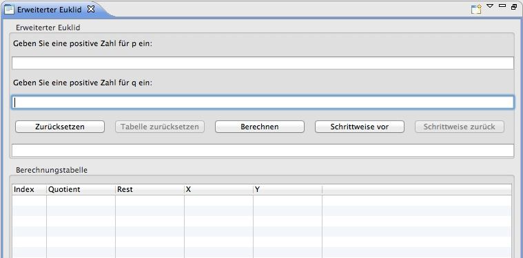
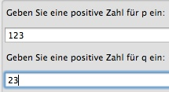
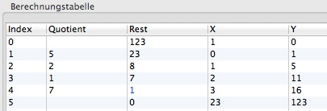
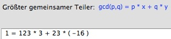
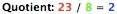
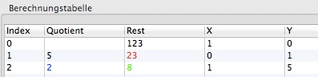
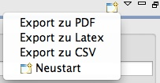

Die Demonstration soll die Funktionsweise des Extended Euclidean Plug-ins zeigen.
Über das Menü Visualisierungen kann das Extended Euclidean Plug-in ausgewählt werden. Dadurch wird das Plugin geladen und in seiner Ansicht maximiert.

In die Eingabemaske p und q können zwei beliebige große positive Zahlen eingegeben werden.
Danach stehen verschiedene Auswahlmöglichkeiten zur Verfügung.
Die Tabelle hat 5 Spalten, Index, Quotient, Remainder, X und Y. Das Endergebnis ist blau dargestellt. Zusätzlich wird unten die Berechnungsvorschrift: gcd(p,q) = p * x + q * y und die dazugehörige Berechnung angezeigt.
Falls man sich für die stepwise... Variante entschieden hat, wird in der Berechnungstabelle die aktuell durchzuführende Berechnung farbig angezeigt.
Zusätzlich wird im Visualisierungsblock , abhängig vom der aktuellen Position der Berechnung, die Tabelle schritweise ausgefüllt. Dabei stimmen die Farben mit den Farben der Berechnungstabelle überein. Mit der Farbe blau wird immer das Ergebnis der aktuellen Berechnung dargestellt.
Nun kann die Berechnung schrittweise mit dem Button Stepwise... sowohl vorwärts als auch mit dem Button Back stepwise... rückwärts durchlaufen werden. Falls das Ende der der Berechnung erreicht ist, wird die Schaltfläche Stepweise... deaktiviert und das Endergebnis sowohl unten als auch in der Berechnungstabelle angezeigt. Es ist auch möglich während man die Berechnung schrittweise durchläuft auf den Button Compute zu klicken, um die schrittweise Berechnung abzubrechen und die Berechnung vollständig bis zum Ende durchzuführen. Nach Durchlauf einer Berechnung kann man das Ergebnis in drei Formaten(PDF, Latex und CSV) exportieren.
Der Export ist nur möglich falls eine Berechnung vollständig durchlaufen wurde.